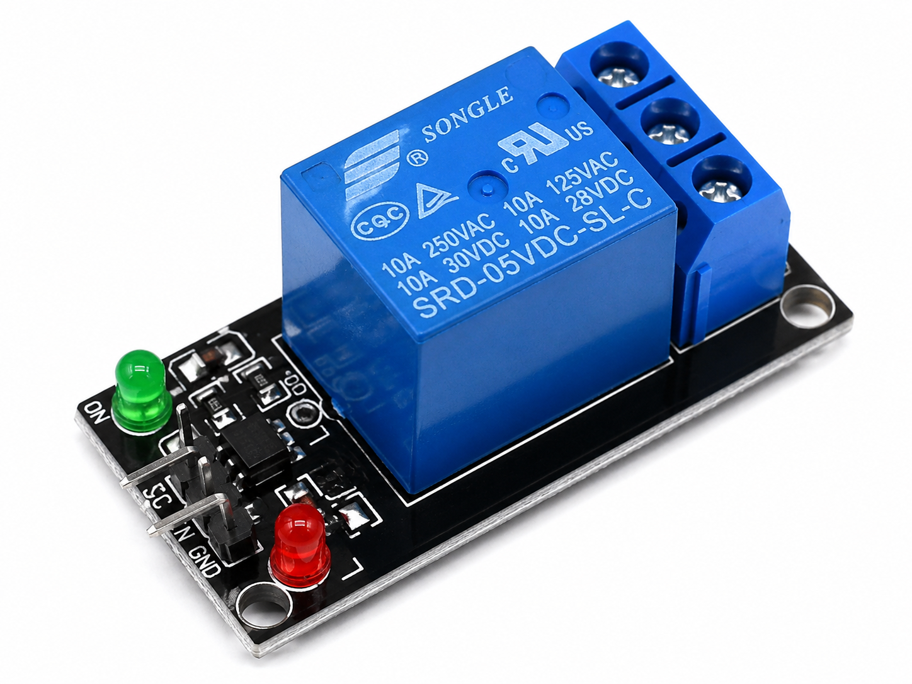

Programmable_Electronic_Control_Console.ino

Programmable Electronic Control Console

To develop a programmable electronic control console using Arduino UNO, a 4×4 matrix keypad, a 16×2 I²C LCD, a relay and a buzzer.
The user enters different commands using the keypad to control the relay, operate the buzzer and display information on the LCD.
The original component list also includes a 4-digit 7-segment display; however, the supplied program does not implement control of that display.
The Programmable Electronic Control Console demonstrates how different electronic operations can be controlled through a single keypad.
Arduino UNO reads user input from a 4×4 matrix keypad and performs the action assigned to each key.
The 4×4 keypad contains sixteen keys: numbers 0–9, letters A–D, and the special keys * and #.
The 16×2 I²C LCD displays the selected operation and relevant system information.
A relay control signal on D10 can operate a suitable relay driver or module.
The buzzer connected to D11 provides short keypress sounds and responds to dedicated buzzer commands.
Every recognized keypress first produces an 80-millisecond buzzer beep, after which the program executes the corresponding command.
Different keypad buttons can switch the relay ON or OFF, control the buzzer, show preset values, reset the outputs and display relay status.
The original page also lists a 4-digit display as part of the hardware. However, the sketch only controls the LCD, relay and buzzer.

Processes keypad commands and controls the console outputs.

Provides sixteen keys for selecting different control operations.

Displays system messages, preset values and the relay's software state.

Listed in the uploaded hardware description, but not operated by the supplied Arduino code.

Intended for switching an external load. A suitable relay driver or module is required for safe Arduino control.

Produces keypress feedback and programmed alarm sounds.

Organizes the low-voltage circuit connections.

Used to connect the keypad, LCD and low-voltage control signals.
Install compatible Keypad and LiquidCrystal_I2C libraries if they are unavailable in Arduino IDE.
The code uses
lcd.init(),
so the selected LCD
library must support
this method.
Relay hardware: The uploaded component is described as an SPDT relay. A bare relay requires an electrically compatible driver circuit. The source does not identify a verified relay-driver module or complete safe driving circuit.
| Keypad Terminal | Arduino UNO Pin |
|---|---|
| Row 1 (R1) | D2 |
| Row 2 (R2) | D3 |
| Row 3 (R3) | D4 |
| Row 4 (R4) | D5 |
| Column 1 (C1) | D6 |
| Column 2 (C2) | D7 |
| Column 3 (C3) | D8 |
| Column 4 (C4) | D9 |
| LCD Terminal | Arduino Connection |
|---|---|
| VCC | 5V |
| GND | GND |
| SDA | A4 |
| SCL | A5 |
| Component | Arduino Connection | Important Detail |
|---|---|---|
| Relay control | D10 | Requires a compatible driver or relay module |
| Buzzer positive (+) | D11 | Only if suitable for safe direct drive |
| Buzzer negative (−) | GND | Common ground |
| Terminal Named in Source | Documented Arduino Connection |
|---|---|
| SDA | A4 |
| SCK | A5 |
| VCC | 5V |
| GND | GND |
These connections are transcribed from the uploaded document, not validated for a specific display model.
A conventional bare 4-digit 7-segment display does not have the four-wire interface described in the source. A display module may use a controller-specific interface such as I²C or CLK/DIO.
Confirm the exact display hardware and datasheet before making these connections. The supplied sketch contains no display driver code.
The uploaded file lists relay terminals 5, 8, 1, 12 and 6 with proposed Arduino and load connections.
The terminal numbering is not sufficient to establish the coil and contact pinout of the specific relay.
Do not connect a bare relay coil directly to D10. Verify the relay's rated coil voltage, required current, contact assignments, and appropriate protective driver.
Use a low-voltage demonstration load for classroom testing. Do not connect mains-voltage loads on a breadboard.

The Keypad library scans the matrix and returns the character corresponding to the pressed key.
Arduino compares that character against programmed conditions using if and else if statements.
Pressing key 1 sets D10 HIGH. Pressing key 2 sets D10 LOW.
The program treats HIGH as the relay ON command and LOW as the OFF command.
This behavior assumes the relay driving hardware is active-HIGH. An active-LOW relay module would respond differently.
Pressing key 3 sets the buzzer output HIGH. Pressing key 4 sets it LOW.
Each new keypress produces an 80 ms beep before the selected command runs.
Consequently, a permanently enabled buzzer can be briefly switched OFF by the keypress feedback sequence before the next command executes.
| Key | Function | LCD / Output |
|---|---|---|
| 1 | Relay ON | RELAY: ON |
| 2 | Relay OFF | RELAY: OFF |
| 3 | Buzzer ON | BUZZER: ON |
| 4 | Buzzer OFF | BUZZER: OFF |
| 5–9 | Display selected key | Selected Key: [digit] |
| 0 | Reset outputs | SYSTEM RESET |
| A | Display preset value | 1234 on LCD |
| B | Display preset value | 0000 on LCD |
| C | Relay ON + timed buzzer | ACTIVE |
| D | Relay OFF + timed buzzer | BUZZER ALERT |
| * | Clear and update LCD | Display Cleared |
| # | Show relay output state | Relay: ON / OFF |
LCD displays 1234
LCD displays 0000
Relay HIGH + 500 ms buzzer
Relay LOW + 500 ms buzzer
Pressing key 0 sets both D10 and D11 LOW and displays the reset message.
Pressing # reads the relay output state using digitalRead() on D10 and displays the corresponding ON or OFF message.
Arduino Experiment · Code Review
Programmable Electronic Control Console · Select a step to highlight and understand the complete Arduino program.
Choose a step to highlight and scroll to the matching Arduino code.
A 4×4 keypad uses four rows and four columns to identify sixteen buttons.
The Keypad library scans the matrix and returns the character belonging to the pressed key.
The LCD uses the I²C interface to reduce the number of signal connections.
Arduino UNO uses A4 for SDA and A5 for SCL.
The sketch uses LCD address 0x27. Confirm that the actual LCD module has this address.
A relay is an electrically operated switch.
The sketch commands a digital output on D10.
A bare relay must not be driven directly from the Arduino output pin. Use suitable driving hardware.
The sketch generates an 80 ms keypress buzzer pulse.
Keys C and D generate additional 500 ms pulses.
A final 200 ms delay follows each processed keypress.
These delays temporarily block keypad processing.
Try it: First test only the keypad, LCD and a safely driven buzzer. Press 1, 2 and # to observe how the program tracks the relay output state before attaching relay hardware.
Control Console System Ready
After a two-second startup delay, the LCD displays:
Press Key
| Key | Expected LCD Message | Output Action |
|---|---|---|
| 1 | RELAY: ON / Key 1 | D10 HIGH |
| 2 | RELAY: OFF / Key 2 | D10 LOW |
| 3 | BUZZER: ON / Key 3 | D11 HIGH |
| 4 | BUZZER: OFF / Key 4 | D11 LOW |
| 5–9 | Selected Key: / digit | Display only after keypress beep |
| 0 | SYSTEM RESET / Relay: OFF | D10 and D11 LOW |
| A | Value: / 1234 | LCD update |
| B | Value: / 0000 | LCD update |
| C | RELAY + BUZZER / ACTIVE | D10 HIGH; D11 HIGH for 500 ms |
| D | RELAY OFF / BUZZER ALERT | D10 LOW; D11 HIGH for 500 ms |
| * | Display Cleared / Press Key | LCD update |
| # | SYSTEM STATUS / Relay: ON or OFF | Read D10 output state |
RELAY: ON Key 1
RELAY: OFF Key 2
Value: 1234
Value: 0000
SYSTEM RESET Relay: OFF
SYSTEM STATUS Relay: ON
The code does not initialize Serial communication. No Serial Monitor messages are expected.
The four-digit 7-segment display is not updated by the original sketch.
The buzzer produces an 80 ms keypress pulse before every processed command. Keys C and D also provide 500 ms pulses.
Relay contact movement depends on the chosen hardware and correct driver interface. The sketch alone does not verify physical load switching.
The Programmable Electronic Control Console demonstrates how an Arduino UNO and 4×4 keypad can be used to select multiple electronic control operations.
Different keypad keys control the relay command signal and buzzer output, while the LCD displays command messages and preset values.
The experiment illustrates keypad interfacing, digital output control, conditional logic and LCD-based user interaction.
Additional hardware verification and programming would be required to operate the listed 4-digit display and to validate physical relay load switching.